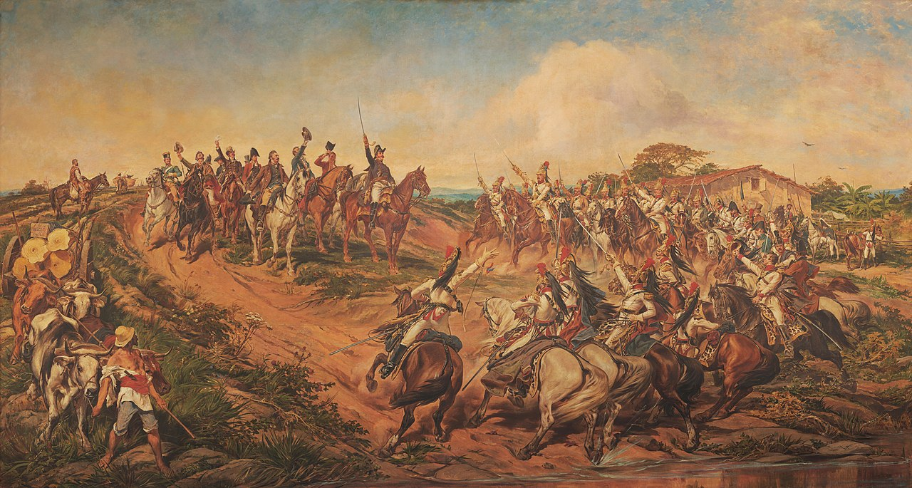
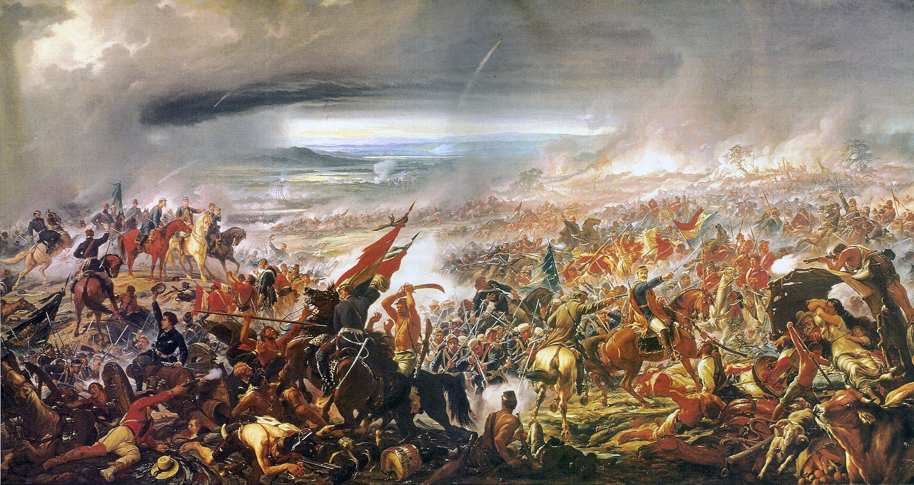
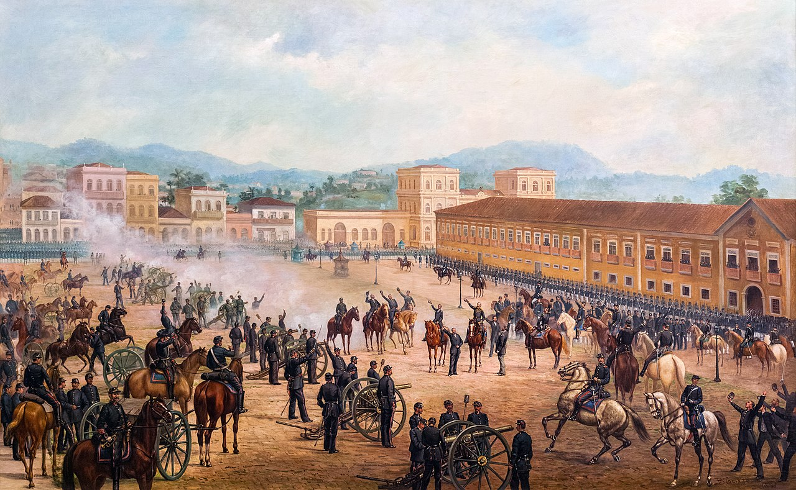

Artes e suas histórias!
Desembarque de Pedro Álvares Cabral em Porto Seguro em 1500 (1900)

Saiba mais sobre o autor clicando aqui!
Contexto da obra!
Descoberta ou descobrimento do Brasil refere-se à chegada dos portugueses ao território atualmente conhecido como Brasil. Este momento é muitas vezes entendido como sendo o do avistamento da terra que então denominaram por Ilha de Vera Cruz, nas imediações do Monte Pascoal, pela armada comandada por Pedro Álvares Cabral, ocorrida no dia 22 de abril de 1500. Esta descoberta inscreve-se nos chamados descobrimentos portugueses.
Independência ou Morte (1888)
Saiba mais sobre o autor clicando aqui!
Contexto da obra!
A Independência do Brasil foi o processo histórico de separação entre o então Reino do Brasil e Portugal, que ocorreu no período de 1821 a 1825, colocando em violenta oposição as duas partes (pessoas a favor e contra). As Cortes Gerais e Extraordinárias da Nação Portuguesa, instaladas em 1820, como consequência da Revolução Liberal do Porto, tomam decisões, a partir de 1821, que tinham como objetivo reduzir a autonomia adquirida pelo Brasil, o que na prática o faria retornar ao seu antigo estatuto colonial.
Batalha do Avaí (1877)
Saiba mais sobre o autor clicando aqui!
Contexto da obra!
A batalha do Avaí foi travada junto ao arroio de mesmo nome, em território paraguaio, em 11 de dezembro de 1868, durante a Guerra da Tríplice Aliança (1864-1870), entre as forças da Tríplice Aliança e as do Paraguai. Foi um dos combates travados na fase do conflito denominada como Dezembrada, quando se registrou uma série de vitórias obtidas por Duque de Caxias naquele mês, ao evoluir em direção ao Sul para tomar Piquissiri pela retaguarda, a saber: batalhas de Itororó, Avaí, Lomas Valentinas e Angostura. Além da presença de Caxias, General Osório também participou da batalha.
Proclamação da república (1893)
Saiba mais sobre o autor clicando aqui!
Contexto da obra!
A Proclamação da República Brasileira, também referida na História do Brasil como Golpe Republicano ou Golpe de 1889, foi um golpe de Estado político-militar, ocorrido em 15 de novembro de 1889, que instaurou a forma republicana presidencialista de governo no Brasil, encerrando a monarquia constitucional parlamentarista do Império e, por conseguinte, destituindo o então chefe de Estado, imperador D. Pedro II, que em seguida recebeu ordens de partir para o exílio na Europa.
Preguiça de botar mais imagens
- Desembarque de Pedro Álvares Cabral
- Independência ou Morte
- Batalha do Avaí
- Proclamação da república